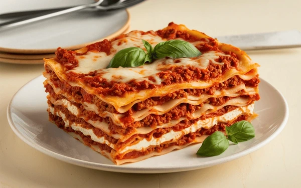

Lasagna Recipe

Classic lasagna made with layers of rich meat sauce, creamy ricotta, and melty mozzarella, baked to golden perfection.
Lasagna is the ultimate comfort food, combining savory layers of pasta, seasoned meat sauce, and a creamy ricotta mixture, all topped with gooey, golden cheese.
Baked until bubbly and crisp around the edges, it’s hearty, flavorful, and perfect for family dinners or special occasions.
Ingredients
- 2 tbsp olive oil
- 1 onion, chopped
- 2-3 garlic cloves, minced
- 1 lb ground beef(or beef/pork mix)
- 28 oz crushed tomatoes
- 2 tbsp tomato paste
- 1 tsp Italian seasoning
- salt and pepper
- 15 oz ricotta cheese
- 1 egg
- ¼ cup grated Parmesan
- 9–12 lasagna noodles
- 2 cups shredded mozzarella
- Extra Parmesan (for topping)
Steps
- Start by preparing a rich meat sauce: sauté chopped onions and garlic in olive oil, then add ground beef (or a beef-pork mix) and cook until browned. Stir in crushed tomatoes, tomato paste, and Italian seasoning. Let it simmer for at least 30–45 minutes to develop deep flavor.
- Meanwhile, cook lasagna noodles until al dente or use no-boil noodles. In a separate bowl, mix ricotta cheese with an egg, salt, pepper, and a bit of grated Parmesan. Preheat your oven to 375°F (190°C).
- In a large baking dish, layer the ingredients: start with a spoonful of sauce, then noodles, ricotta mixture, meat sauce, and shredded mozzarella. Repeat the layers, ending with sauce and a generous topping of mozzarella and Parmesan.
-
Cover with foil and bake for 25 minutes. Remove the foil and bake for another 20 minutes, until bubbly and golden. Let it rest for 15 minutes before slicing to help it set.
Home